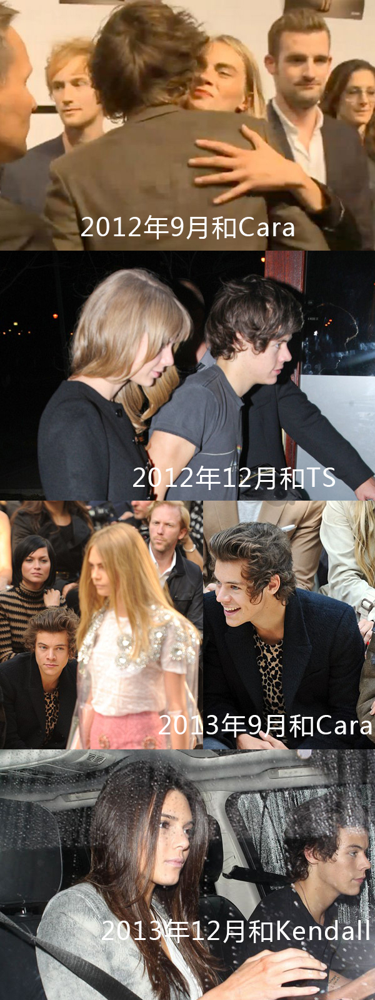
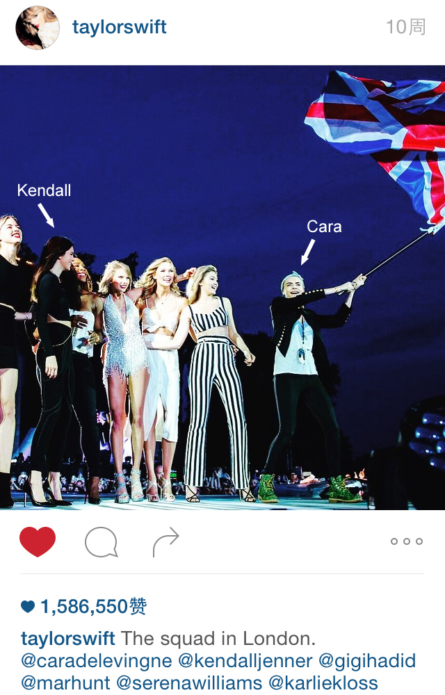
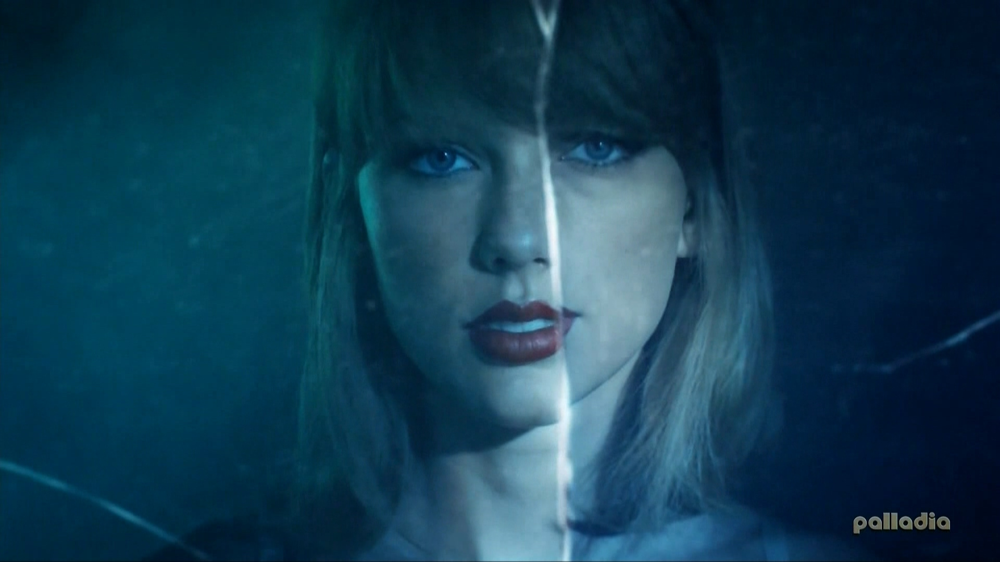
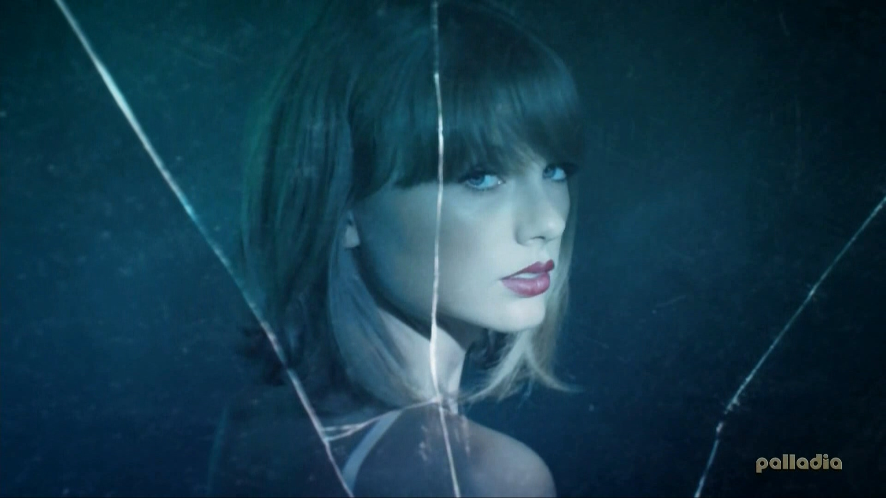
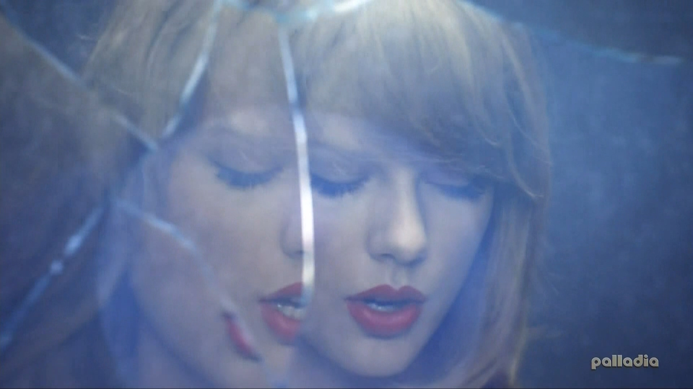
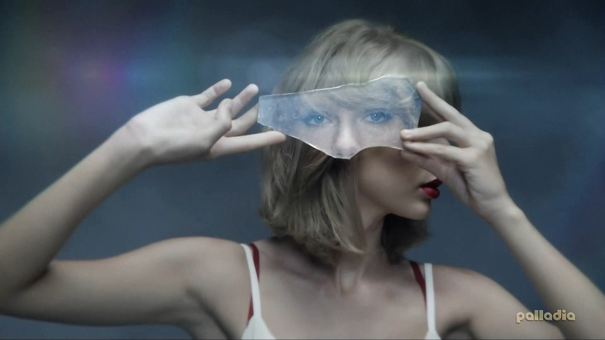
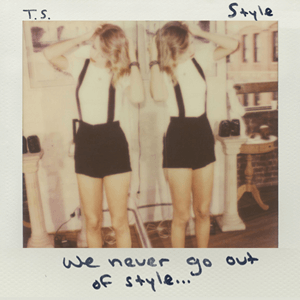
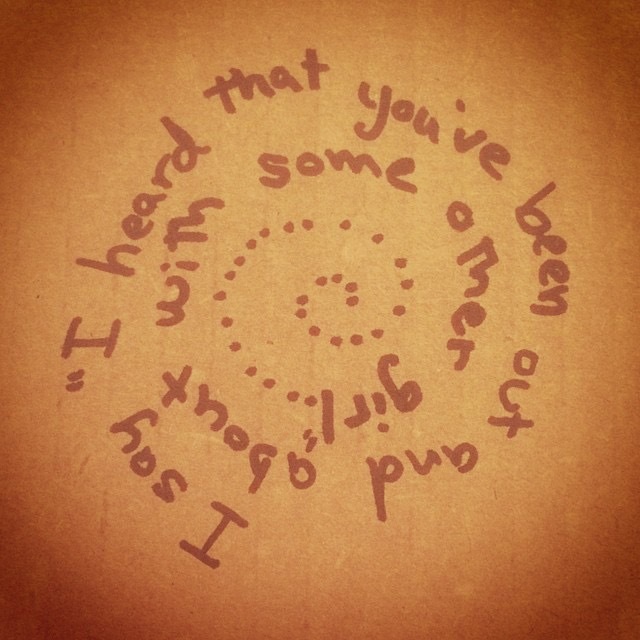

15. Style
上半部分：Style不是写Styles
这首歌是1989中，被大多数人很确定、很确定的认为是写HS的一首歌，一是因为歌名叫Style，二是因为 MV中的纸飞机项链，三是歌词中slicked back的long hair，以及with some other girl分手又复合的情节。
在Chapter 1中，Swiftgron was real已详述过，Haylor是PR前文也介绍过，在Haylor是PR的前提下，TS就不可能给HS写一首情深意切的we never go out of style的情歌。
虽然Chapter 1已经写了那么多Swiftgron和Haylor是怎么回事，鉴于“Style是写Harry Styles的”这个观点太深入人心，为了避免有人觉得我是在妄想的前提下（Haylor是PR）得出了错误的结论（Style不是写HS），在本节中我暂时撇开Haylor是PR这个前提，我们先假设TS和HS真的在一起过，在此基础上来解读Style。
从4个方面展开：
1. 歌名
这首歌原名是"We Never Go Out of Style"， 借时尚喻感情，感情就像经久不衰的时尚潮流一样，无论经历多少轮春夏秋冬季的变迁，始终长存不灭。
TS说原名太长改成了Style，改完之后，新歌名并不能反应出原名的含义，倒是会让人将这首歌往Harry Styles身上联想。
{kind=link}
说起歌名长，RED中的We Are Never Ever Getting Back Together这才是真的长，如果说是吸取了WANEGBT的经验不想在1989中再用长歌名，1989中最长歌名的是All You Had to Do Was Stay，这首歌的主题和中心词就是Stay，把AYHTDWS改成Stay，比We Never Go Out of Style改成Style更合适、更贴切。
（歌名）Style ≠ Styles（人名）
对中国人来说，名字上多一笔少一笔差别大了，比如一个人叫“闫妮”，总不能说多一笔没关系叫人家“闰妮”吧。
对欧美人来说，多个字母少个字母差别当然也大了，有一个真实的例子：
美国有个著名大学Johns Hopkins University（约翰霍普金斯大学），有一次匹兹堡大学（University of Pittsburgh） 的校长到约翰霍普金斯访问，想着约翰不是John嘛，就把人家校名念成了John Hopkins，被人吐槽很久，后来约翰霍普金斯的校长去匹兹堡大学访问，故意把对方的校名念成了University of Pittburgh（也少念一个s），礼尚往来。
TS想在歌名或隐藏信息中写上谁的名字来表明这首歌是写谁或者和谁有关，从来都是堂堂正正把别人的名字写好，不会玩多个字母少个字母的花样，比如：
Tim McGraw —— < Taylor Swift >
Should've Said No（隐藏信息Sam Sam Sam Sam Sam Sam）—— < Taylor Swift >
Hey Stephen —— < Fearless >
The Best Day（隐藏信息God bless Andrea Swift）—— < Fearless >
Dear John —— < Speak Now >
Back to December（隐藏信息Tay）—— < Speak Now >
Enchanted（隐藏信息Adam）—— < Speak Now >
22（隐藏信息Ashley Dianna Clare Selena）—— < RED >
Starlight（隐藏信息For Ethel）—— < RED >
前四专中TS都有明确写出人名，按照这个惯例，她想把HS的名字写进去那就写进去好了，又不是第一次了，但是< 1989 >中完全没有出现人名。
2. 人物特征
You got that James Dean day dream look in your eye
You got that long hair, slicked back, white t-shirt
很多人说这段100%是在描述HS，让我们来看看
HS有没有James Dean day dream look in your eye，这点见仁见智
slicked back的头发是有的，white t-shirt也穿过
至于long hair，那是一定没有的
HS和TS在一起前不是长发，在一起时不是，分开后不是，直到TS录完Style时他都不是长发。他现在的长发是14年之后慢慢留起来的。
如果这也能叫long hair，我不知道什么才是short hair了。
3. 感情经历
在2014年10月31号的Taylor Swift Breaks Down "Style" with Ryan Seacrest电台节目中（2分35秒），Ryan问到Style中的歌词：
R：有这么几句歌词
You've been out and about with some other girl.
He says "what you heard is true, but I can't stop thinking about you."
R：在听到下一句歌词前我就很好奇，你对他说的话会有什么反应呢，然后下一句你就唱道
I said "I've been there too a few times."
T：Well, it's basically kind of one of those relationships that's always a bit off. It's … the song is about like kind of a … I talk about in another song（注1） on the record a crooked love, which is kind of like never quite synced up right.
T：其实，这讲述的是那种有点偏离正轨的爱情。这首歌讲的是 …专辑的另一首歌（注1）也正好讲到那种曲折的爱情，两人总是对不上频道。
T：You know, and the two people are trying to forget each other, and they've both been on and been out with other people. And they both try to forget the other. And so it's like, “Alright, you know, I heard you like went off with her. And you know, you came back and … Well, I've done that too, so …”. （注2）
T：然后两个人都开始想要忘却对方，开始和其他人出去玩，都在努力想忘却对方。接着就是“好吧，我听说你现在和她在一起，可是你又回到我身边，好吧，我也这么做过”。 （注2）
T：That's what that line means.
T：这句歌词就是这个意思。
R：How did you hear about it?
R：你怎么得知的？
T：Hear about what?
T：得知什么？
R：How did you hear about him being, I'm not even saying who he is, but how did you hear about "the he" being with someone else? Is that something that you're told, that you read? Is that something that you feel? Is that something that they tell you? Cause that's a tough moment in a relationship.
R：你怎么得知他，我不是要特指谁，我想知道，你从哪里得知“这个他”和其他人在一起的，是别人告诉你的，还是自己看到什么报道？ 你直觉感受到的，还是别人告诉你的？ 那可是恋爱中的瓶颈期。
T：Yeah, but you know, I don't feel like I should go into this, cause I think then we'll be talking about an individual person, and people will all write headlines about it, and it'll be a whole thing. But I think, you know, this song is about my life. And I've never revealed who it's actually about, but the song kind of speaks for itself and kind of like the way this song sounds and feels, that's all I need people to know about that story. （注3）
T：我觉得我不该再深入详谈了，不然的话，我们就会顺势谈到某一个人，之后媒体会大张旗鼓写头条报道，整件事就会被弄出来，但我觉得，这首歌写的就是我的生活。但我从不会透露歌曲真正的主角，而这首歌本身就已经能说明一切了，你从歌中听到的，感受到的，就是我想要你们了解到的。（注3）
注1：这里的another song是指I Wish You Would
歌词中有 We're a crooked love in a straight line down
这首歌写于2013年5月底，隐藏信息是He drove past her street each night，HS在14年3月1989已经完工时才在LA买房子，TS所指的每天晚上开车路过她家的人没可能是HS，这首歌和他无关，而Style又和I Wish You Would一样，讲同一段曲折的爱情，所以Style和HS的关联度……
注2：TS的这段描述：两个人分开，为了忘却对方各自和其他人在一起，后来lover又回到TS身边，TS说“我听说你和她在一起，现在你又回来了，好吧，我也一样”，这个过程和This Love很相似，Wonderland也有类似的描述
I reached for you but you were gone
You search the world for something else to make you feel like what we had —— < Wonderland >
Wonderland中是lover先离开，去别处找寻两人曾经拥有的幸福
Tossing, turning, struggled through the night with someone new —— < This Love >
These hands had to let it go free, and this love came back to me —— < This Love >
This Love中是lover走之后，TS也开始接触新的人，然后lover又回来了
粉丝分析说“1989讲述的是一个完整的爱情故事”被TS点过赞，1989不像RED，1989从曲风到故事都很统一，大家不需要猜这首歌是写张三，那首歌是写李四，那些逝去的爱情都只和一个人有关。
TS在解释Style时描述的这段曲折经历，正好就是从I Wish You Would开始两人争吵、思念、碍于自尊没说出口，到Wonderland中lover离TS而去，到This Love中分开的两人各自都有someone new，然后lover又回来了的过程。
1989中的每一首歌都是这个完整故事中的某一部分。
注3：TS回避了Ryan Seacrest关于她从何处得知lover和其他人在一起的问题，她不能回答，她一回答就会暴露这个人是谁。
这一段被很多人认定是讲HS的，“你看，她说再说下去那人的名字就要出来了，这肯定是写HS的”。
认定的故事情节是：TS和HS在2012年4月有个短暂的地下恋情，后来两人分开，HS "been out and about with some other girl" (Emma Ostilly)，HS和Emma的kiss照曝光后，TS当然听说了这件事。然后他们各自和别的人在一起，比如TS和Conor Kennedy，HS和Cara Delevigne，再然后HS回心转意，他们复合了，"this love came back to me"，"when we go crashing down, we come back every time"，"We never go out of style"。
可是呢，2012年4月的所谓地下恋情根本不存在，这是谣言，是1D团队的炒作，TS根本没掺和，Gossip Cop辟过谣，评分为0，彻头彻尾的rumor。
{kind=link}
TS和HS的时间实际只是从2012年11月14号到2013年1月3号而已，两人真正同屏出现是从12月初开始的。13年1月3号“分手”后，绝无复合，这点霉粉比谁都清楚。
TS和HS从未有过分手、和别人在一起、又复合的剧情。
When we go crashing down, we come back every time
Watch us go round and round each time
People like you always want back the love they pushed aside —— < All You Had to Do Was Stay >
Broke your heart, I'll put it back together —— < How You Get the Girl >
Makes you wanna run and hide then it makes you turn right back around —— < I Wish You Would >
this love is alive back from the dead —— < This Love >
this love came back to me —— < This Love >
But you'll come back each time you leave —— < Blank Space >
We were built to fall apart then fall back together —— < Out of the Woods >
It was months and months of back and forth —— < Clean >
整个1989满满的全是分手又复合，一次次的反复纠缠，这些是Haylor根本没有的。
TS自己写的歌词， TS亲口所说的感情经历，和Haylor的故事南辕北辙。
4. 其他方面
在2012-2014年初，除了TS，和HS传过绯闻的还有Cara Delevingne和Kendall Jenner。
Cara和HS传绯闻的时间是2012年7-9月，2013年9月Cara又和HS传了一阵子绯闻。
接着2013年12月-2014年2月，HS和Kendall在一起。
TS在14年2月依次录了Clean （2月9号）、Shake it Off（2月15号）和Style（2月19号）。
HS和Kendall宣布分手是2月底，在TS录完Style之后。
Shake it Off中有一段
My ex-man brought his new girlfriend, she's like "oh my God", but I'm just gonna shake it
如果这些人的恋情全都是真的，那ex-man就是HS，这new girlfriend不是指Cara就是指Kendall。
同样是14年2月，明明HS已经陆续有几个新女友了，为何TS在Style里还一遍遍的唱着让对方"take me home"？
在13年5月底的I Wish You Would中还碍于自尊没有开口告诉对方自己心中的思念和后悔，怎么过了大半年，心中不但没有放下这段2个月不到的短暂恋情，反而厚着脸皮让一个已经分手一年多身边已经有新女友的前任来"take me home"，简直可怕。
而且，同一时间写的Style和Shake it Off，在Style里是take me home，在Shake it Off里却是I'm just gonna shake it，为什么同一时间对同一个ex会写出相互矛盾的两首歌？
可能一，TS精神分裂了
可能二，TS希望take me home的那个人不是Shake it Off中的ex
到了15年1989巡演，TS把Cara和Kendall都请上了Style的舞台，大家其乐融融的手牵手唱着take me home, just take me home，然后TS在Shake it Off中再翻着白眼唱My ex-man brought his new girlfriend , she's like "oh my God", but I'm just gonna shake it……
从1989 live官方视频，Klossy视频、饭拍视频以及Gigi放出的后台照片来看，海德公园那场演唱会，无论是在休息室还是在后台还是在舞台上，她们都很开心，Cara和Kendall也一直在跟唱。
如果ex-man是指HS，这3个HS的前女友一起欢快的唱着写给HS的歌，简直无法想象，这画面太惊悚。
*************题外话：HS的前女友们*************
HS的前女友Cara
2012、2013年Cara曾和Rita Ora在一起，12年认识，年底互称对方为"wifey"，13年2月Rita亲口证实这一点：
{kind=link}
Despite being linked to some very hot celebrity men, Rita Ora says she doesn't have any time for the opposite sex and would rather hang out with her 'wifey', model Cara Delevigne.
"She's officially mine. She's, like, untouchable. I've taken her off the market. We call each other 'wifey'. You know what a wifey means? It's like your other half. Like when you get married, like, that's your wife!"
这段句句高能，我就不高亮标记了。
13年456月两人频繁出入，5月Cara参演的MV< Facemelt >播出，6月两人在DKNY artworks event的热舞真是……sexy and wild。两人13年9月还手牵手，10月还在一起，可能是年底结束。
{kind=link}
{kind=link}
{kind=link}
{kind=link}
Rita Ora和Calvin Harris在一起的时间是13年5月-14年6月。
2014年，Rita承认曾经和Cara交往过。Cara在14年初出柜，先和女演员Michelle Rodriguez在一起，现在和St. Vincent（原名Annie Clark）在一起。15年Cara在INS上点赞了说Rita Ora是她Ex的图。
{kind=link}
噢，Cara真是HS的好女友，Rita真是CH的好女友。
HS的前女友Kendall
13年12月，HS带着新女友Kendall去他在纽约最喜欢的GAY BAR约会，我也是醉了，这其实是一对好基友吧。
15年12月，这两人又凑到一起去了，据说是因为媒体要爆料Kendall是Les，豆妈赶紧请HS再来有偿的友情帮忙一把，图1，图2，图3，图4、图5。
{kind=link}
{kind=link}
{kind=link}
{kind=link}
{kind=link}
（Harry Styles和Louis Tomlinson不在本文的讨论范围，Kendall Jenner 和Lauren Perez也不在本文讨论范围，这两组深柜/透明柜不再展开。）
*************题外话结束*************
上半部总结
由以上几点得出，即使不谈TS的其他绯闻，只说TS和HS，Style也不可能是写HS的。
TS在认识Conor Kennedy之前就写完、录完了Everything Has Changed；
TS在RED发行后才和Harry Styles“在一起”，I Knew You Were Trouble和Harry Styles一点关系都没有；
TS说Style是写她生活中的故事，而这个故事和Haylor的故事完全两码事；
这几首歌是大家很确定、很确定的认为是写Conor Kennedy以及Harry Styles的，之所以这么确定是因为TS给了很多提示（误导性的隐藏信息、歌词、发言，还有纸飞机这种强暗示性的东西），然而实际这些歌和他们都无关。
TS写歌给Joe Jonas被对方回敬了一首，TS写歌给John Mayer对方抱怨说她抹黑自己，TS被Jack Gyllenhaal警告过不许给他写歌但她还是写了。
她想写谁从来都是直接写，何时需要误导给他人，为什么到了RED和1989时期，她要误导给Conor Kennedy，误导给Harry Styles？ 这些歌真正的主角是谁？TS为什么要给主角找替身？
Harry Styles被TS“写了”这么多歌，从RED写到1989，明明和他无关，背了这么大的黑锅，这么大的骂名（尤其IKYWT），竟然没有半句怨言，是什么样的关系才能让他做到这个地步？
如果这些问题你想不出答案，请重头再看Chapter 1 – TimeLine。
下半部分：Style在写什么
1. 比喻
在1989中有很多比喻。
Style中她指明了，她想用一些永恒的事物来形容感情，fashion show给了她灵感，她以时尚来喻感情，也许小黑裙、红唇妆一段时间不流行了，但过段时间它又会重回人们视线中，就像感情，分开复合，经久不衰。
这场给她灵感的fashion show可能是2013年11月由她当表演嘉宾的Victoria's Secret Fashion Show。
Style是1989中最晚完成的作品之一，在Styel完成时，她的上一段恋情已经结束了，分合反复的过程的确像时尚一样轮回变换。
在2013年底写Wildest Dreams和Out of the Woods时她曾悲观的感叹，Love just ends，（她自己的）爱情是不会长久的，结束只是时间问题，而到了写Style时，她却想用永恒的事物来比喻爱情，Style这首歌的题眼是we never go out of style，爱情难以磨灭，经久不衰。
从Wildest Dreams到Style的2个月之间，一定发生了让她的观点改变的事，能够拥有这么大改变力量的极有可能是她遇到了新的人，开始了新的恋情。
本节上半部分第4点中谈到，同一时间写的Style和Shake it Off，前者对一个人诉说着take me home，后者面对ex时说I'm just gonna shake it，两种截然不同的态度，这是针对两个不同的人，Shake it Off是对ex，Style虽然讲述了她之前的经历，但这首歌中还加入了让她转变爱情观念的另一个人，take me home是对这个人说的。
除了以时尚喻爱情外，在TS写的歌中她还常常用车来比喻relationship
用drive的不同状态比喻一段关系中遇到的各种情况
用headlight比喻爱意或感情
比如
把车开进死胡同
Loving him is like driving a new Maserati down a dead-end street, faster than the wind, passionate as sin, ending so suddenly —— < Red >
你踩了急刹车
Remember when you hit the brakes too soon, twenty stitches in a hospital room —— < Out of the Woods >
你停在半路
All I know is that you drove us off the road —— < All You Had to Do Was Stay >
半夜2点，你路过我家，头也不回的往前走
It's 2am, in your car, windows down, you pass my street, the memories start
You say it's in the past, you drive straight ahead
窗外车灯划过
Headlights pass the window pane, I think of you, we're a crooked love, in a straight line down —— < I Wish You Would >
两个车灯闪亮
Two headlights shine through the sleepless night and I will… get you, I'll get you alone —— < Treacherous >
有时候也会用train代替car来比喻，也许是train来去速度更快
比如
Silence, the train runs off its tracks, kiss me, try to fix it, could you just try to listen.
Hang up, give up, and for the life of us we can't get back —— < Sad Beautiful Tragic >
We wait for trains that just aren't coming —— < New Romantics >
如果再算上MV中车的寓意
< Bad Blood >中友情破裂时TS从楼上摔下来砸烂了一辆车；
< Blank Space >中恋情结束时TS拿高尔夫球杆砸烂了一辆车，前男友开着破车走了，新人开着新车来了；
Style歌词的第一句就写着
Midnight, you come and pick me up, no head lights
午夜，你来接我，没开车灯（寓意已经没有爱了），这是TS的前任。
在Style MV的最后一个镜头中，是一辆开着车灯的车接TS回家，这是TS希望take me home的新的人。
2. 亦真亦幻
< 1989 >16首歌中，我觉得最难写的就是Style，无论是歌词还是MV，它都太抽象太难看清了。
人称上，她一会用He，一会用You
时态上，一会是现在时，一会是过去时
最诡异的是在这段I和He的对话中，前两句是现在时，第三句突然变成了过去时。
I say "I heard, oh, that you been out and about with some other girl, some other girl."
He says, "what you've heard it's true but I can't stop thinking about you"
I said "I've been there too a few times"
如前文所说，Style中不只一个人，当我尝试去解释Style的每一段究竟是在讲TS和谁的什么经历时，我试过用He和You来区分两个人，讲不通，我试过用前半段和后半段来区分两个人，还是说不圆。
看Style的MV更是一头雾水，难怪大家看完之后都说这是幻灯片，从MV中看不出任何真实具体的场景和事件，从头到尾都是由破碎的镜头，模糊的、虚幻的、重叠的光影画面，没有规律的拼接而成。
我不知道该怎么去解读这首歌的歌词和MV，直到有一天我无意中看到一篇文章，文章中说，Style的MV很像《穆郝兰道》，我细细一回想，还真的很像，越想越觉得像，除了表现手法，连夜晚开车在无人的公路上行驶那段都像极了。
零碎的、模糊的片段，虚虚实实，如梦似幻，哪些是幻梦哪些才是真实？
Style的MV是TS授意Kyle Newman剪成这样的，这就是她要表达的效果。这首歌不能用时间、地点、谁、做什么的方式来解读，这么读就会像我之前那样陷入怎么读都读不通的境地。
Style不是一个有时间线的叙事诗，它和那部电影一样，被打散了打碎了，TS在歌词中He和You，现在时和过去时的混乱使用就是一个提示。
在被打得七零八碎的画面中，你看到了一闪而过的纸飞机项链，“哎呀！明白了，这首歌是写Harry Styles的！”
你看到的是真实还是幻梦呢？
就像《穆郝兰道》，看电影的前一半你会以为这是两个女人纯洁的友谊，逐梦好莱坞顺便找寻真相的故事，可看到最后才发现这都是幻觉。
Style实际与Styles无关，这在上半部分已经说明了。
和Style有关的两个人，一个是上一段恋情中经历了分合反复的Dianna Agron，一个是VS Fashion Show后迅速成为BFF+让TS扭转对爱情悲观态度的Karlie Kloss。
{kind=link}
{kind=link}
在Style的MV中，有个十分重要的道具：镜子
破碎的镜面将她分裂成几部分，这几部分既不吻合动作也不一致；
  {kind=link}
{kind=link}
{kind=link}
她手持一块破碎镜片，真实的她和镜中的她做着不同的动作；
{kind=link}
就连Style的单封，也是站在镜前的两个她：她和她的镜像；
我们看到的，究竟是真实的她
还是透过镜子/镜头折射出的，她的image（镜像/公众形象）呢？
在文章开头我觉得将歌名从We Never Go Out of Style改成Style无法表达题眼原意
还不如将All You Had to Do Was Stay改成Stay
可文章写到最后，我觉得改得好
We Never Go Out of Style只有一层意思，改成了Style反倒含义更丰富了
1. 过去的感情经历像Style一样来来去去；
2. 希望爱情像Style一样经久不衰，we never go out of style；
3. 我们看到的不过是她的Style/Image；
4. 更方便建立Style与Styles相关的幻象；
This song is about my life. And I've never revealed who it's actually about, but the song kind of speaks for itself and kind of like the way this song sounds and feels, that's all I need people to know about that story.
这首歌写的就是我的生活。但我从不会透露歌曲真正的主角，而这首歌本身就已经能说明一切了，你从歌中听到的，感受到的，就是我想要你们了解到的。
Style手写歌词
{kind=link}